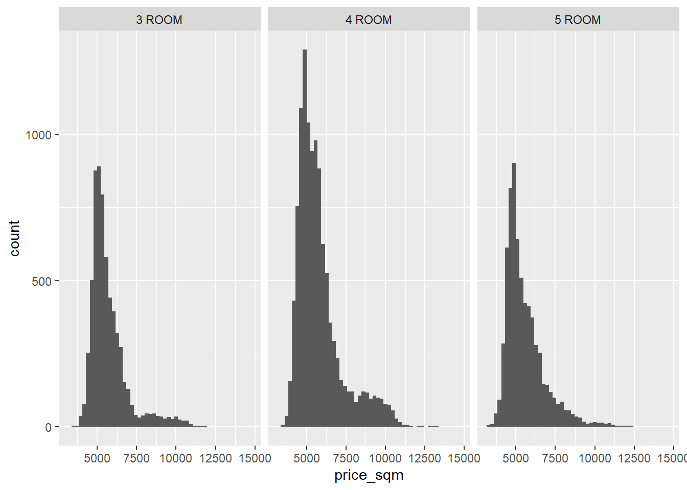
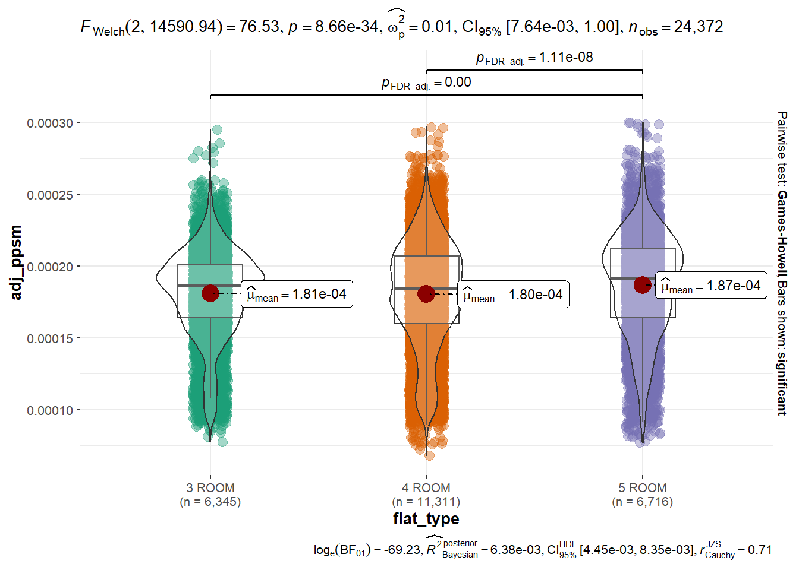

pacman::p_load(ggstatsplot, plotly, performance, corrplot, tidyverse)Take-home Ex3: Visual Statistical Analysis of Resale Flats in 2022
1. Introduction
The task is to uncover salient patterns of the resale prices of public housing in Singapore by using appropriate statistical analysis visualization techniques. For the purpose of this exercise, the focus is on 3/4/5-room flats in 2022.
2. Selection & Design Considerations
As a subset of the focus area, we will dive deeper into the relationship between resale prices and flat sizes between the 3 flat types. The general rule of thumb for property prices is that there is an inverse correlation between prices and size, i.e. the larger property will have a lower per sqm price. We will be transforming the resale prices to its per sqm equivalent and see if there is any significant statistical difference to the mean prices per sqm across 3/4/5-room flat types.
To achieve this, we will be using ANOVA to test the null hypothesis that the price per sqm means are the same across the 3 flat types. ANOVA is chosen because the data has more than two categorical sample groups and one numerical variable. We will also have to check for normality because ANOVA assumes that the data is normally distributed.
3. Detailed Steps
3.1 Installing and launching R packages
3.2 Loading the data
resale <- read.csv("data/resale.csv")3.3 Filtering the data
We filter the data to the required scope of 3/4/5-ROOM types and for the time period of 2022
filter1 <- c("3 ROOM", "4 ROOM", "5 ROOM")
resale2022 <- filter(resale, resale$flat_type %in% filter1)
filter2 <- c("2022-01", "2022-02", "2022-03", "2022-04", "2022-05", "2022-06", "2022-07", "2022-08", "2022-09", "2022-10", "2022-11", "2022-12")
resale2022 <- filter(resale2022, resale2022$month %in% filter2)3.4 Calculating the price per sqm
We calculate the price per sqm to be able to compare the means across the different flat types
resale2022 <- resale2022 %>% mutate(price_sqm = resale_price / floor_area_sqm)3.5 Check distribution of data
ANOVA requires data to be normally distributed
ggplot(data = resale2022,
aes(x = price_sqm)) +
geom_histogram(bins = 50) +
facet_wrap(~ flat_type)
3.6 Additional data transformation
We are not able to use ANOVA since the raw data is not normally distributed. Therefore one options is to transform the data to best fit a normal distribution. In this case where the data is severely positively skewed, we will inverse the values, i.e. 1/x.
resale2022 <- resale2022 %>% mutate(adj_ppsm = 1/price_sqm)
ggplot(data = resale2022,
aes(x = adj_ppsm)) +
geom_histogram(bins = 50) +
facet_wrap(~ flat_type)
3.7 ANOVA test
With the data now somewhat more closely fitting a normal distribution, we can proceed with using the one-way ANOVA to test the null hypothesis that the price per sqm means are the same across the 3 flat type.
ggbetweenstats(
data = resale2022,
x = flat_type,
y = adj_ppsm,
type = "p",
mean.ci = TRUE,
pairwise.comparisons = TRUE,
pairwise.display = "s",
p.adjust.method = "fdr",
messages = FALSE
)
4. Interpretation of Results
As the p-value form the one-wau ANOVA test is less than the significance level of 0.05, we can reject the null hypothesis. We can therefore conclude that there is enough statistical evidence to support the statement that there are significant statistical differences between the price per sqm.
However, ANOVA only proves that there are significant statistical difference between the 3 flat types but this is not sufficient to prove that larger floor areas equals to lower price per sqm. Therefore we will need to go further by using Tukey multiple pairwise comparisons to get our answer.
res.aov <- aov(adj_ppsm ~ flat_type, data = resale2022)
TukeyHSD(res.aov) Tukey multiple comparisons of means
95% family-wise confidence level
Fit: aov(formula = adj_ppsm ~ flat_type, data = resale2022)
$flat_type
diff lwr upr p adj
4 ROOM-3 ROOM -3.360650e-07 -1.610556e-06 9.384255e-07 0.8102436
5 ROOM-3 ROOM 5.976589e-06 4.554018e-06 7.399159e-06 0.0000000
5 ROOM-4 ROOM 6.312654e-06 5.060918e-06 7.564390e-06 0.0000000The results tell us that:
4-ROOM - 3-ROOM < 0 but not significant
5-ROOM - 3-ROOM > 0 and significant
5-ROOM - 4-ROOM > 0 and significant
Only 4-ROOM flats show a lower price per sqm than 3-ROOM flats but the p-value is higher than the confidence level so this difference is not significant. Therefore the results actually proves that the general rule of thumb that large flats equal to lower price per sqm is actually not statistically accurate.
This is actually not surprising as the flat types in this exercise include all the different planning areas in Singapore which can be a huge factor towards determining the flat prices. Other variables such as remaining lease could potentially also play a part in affecting the prices. An better study would be to breakdown the data into smaller groups (same planning area, small range of remaining lease, etc.) and test between multiple groups.